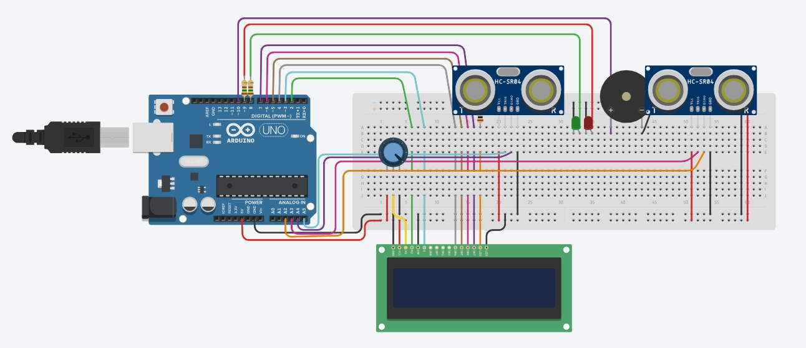

Sobre o Projeto
Diversas estruturas, como marquises, lajes, pontes, telhados e coberturas, estão sujeitas ao desgaste natural e a diversos fatores que podem comprometer sua segurança. Entre as principais causas de falhas estruturais estão erros de projeto, uso de materiais inadequados, infiltrações, corrosão, fissuras, excesso de carga e falta de manutenção preventiva.
Muitos acidentes envolvendo desabamentos poderiam ser evitados com inspeções regulares e monitoramento contínuo. A identificação precoce de deformações ou deslocamentos permite que reparos sejam realizados antes que os danos evoluam para situações de risco, aumentando a segurança das pessoas e a vida útil da estrutura.
Solução Proposta
Nosso projeto propõe um sistema inteligente de monitoramento estrutural utilizando sensores de proximidade. Esses sensores medem continuamente a distância entre um ponto de referência e elementos da estrutura, permitindo identificar movimentações, deformações ou deslocamentos anormais.
Inicialmente, é definida uma condição de referência considerada segura. Os sensores realizam medições periódicas e enviam os dados para um microcontrolador. Quando a variação detectada ultrapassa os limites estabelecidos, o sistema gera um alerta indicando uma possível falha estrutural, permitindo ações preventivas.
O sistema pode ser instalado em vigas e pilares de concreto, pontes, estruturas metálicas, lajes, pisos e coberturas. Dessa forma, é possível monitorar deformações, deslocamentos e outros sinais que indiquem comprometimento estrutural.
O monitoramento em tempo real auxilia na manutenção preventiva, reduz custos com reparos emergenciais e diminui o risco de acidentes e desabamentos. Além disso, contribui para a preservação das estruturas e para a segurança.
Código Arduino
#include <LiquidCrystal.h> // LCD
LiquidCrystal lcd(2, 3, 4, 5, 6, 7);
String estadoPilar1, estadoPilar2;
int ledVermelho = 9, ledVerde = 8;
int pilar1, pilar2 = 0;
void setup(){
Serial.begin(9600); // Serial
lcd.begin(16,2); // LCD 16x2
pinMode(ledVerde, OUTPUT);
pinMode(ledVermelho, OUTPUT);
pinMode(10, OUTPUT); // Buzzer
}
void mostrarEstado(){
lcd.clear(); // Limpa display
lcd.setCursor(0, 0);
lcd.print("Pilar 1: "+ estadoPilar1);
lcd.setCursor(0, 1);
lcd.print("Pilar 2: "+ estadoPilar2);
}
long readUltrasonicDistance(int triggerPin, int echoPin)
{
pinMode(triggerPin, OUTPUT);
digitalWrite(triggerPin, LOW);
delayMicroseconds(2);
digitalWrite(triggerPin, HIGH); // Pulso trigger
delayMicroseconds(10);
digitalWrite(triggerPin, LOW);
pinMode(echoPin, INPUT);
return pulseIn(echoPin, HIGH); // Tempo em microssegundos
}
String verificarEstado(int pilar){
if (pilar > 100) return "Ok"; // Bom
else if (pilar >= 50) return "Irregular"; // Atenção
else return "Comprometido"; // Crítico
}
void loop(){
// Converte tempo (us) em cm (fator aproximado)
pilar1 = 0.01723 * readUltrasonicDistance(A3, A2);
pilar2 = 0.01723 * readUltrasonicDistance(A5, A4);
estadoPilar1 = verificarEstado(pilar1);
estadoPilar2 = verificarEstado(pilar2);
Serial.println(pilar1);
Serial.println(pilar2);
// Ambos OK -> verde; caso contrário -> vermelho + alarme
if (estadoPilar1 == "Ok" && estadoPilar2 == "Ok"){
digitalWrite(ledVermelho, LOW);
digitalWrite(ledVerde, HIGH);
noTone(10);
mostrarEstado();
} else {
digitalWrite(ledVermelho, HIGH);
digitalWrite(ledVerde, LOW);
tone(10, 4450, 1000);
mostrarEstado();
}
delay(100); // Pausa
}
Esquema

Link para o projeto no Tinkercad